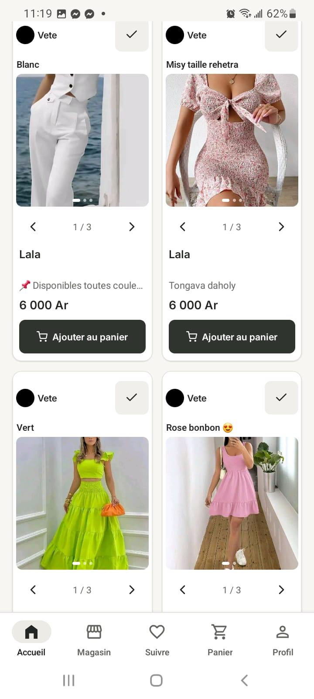
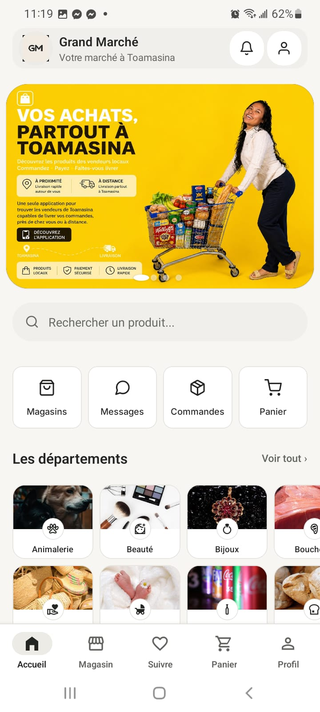
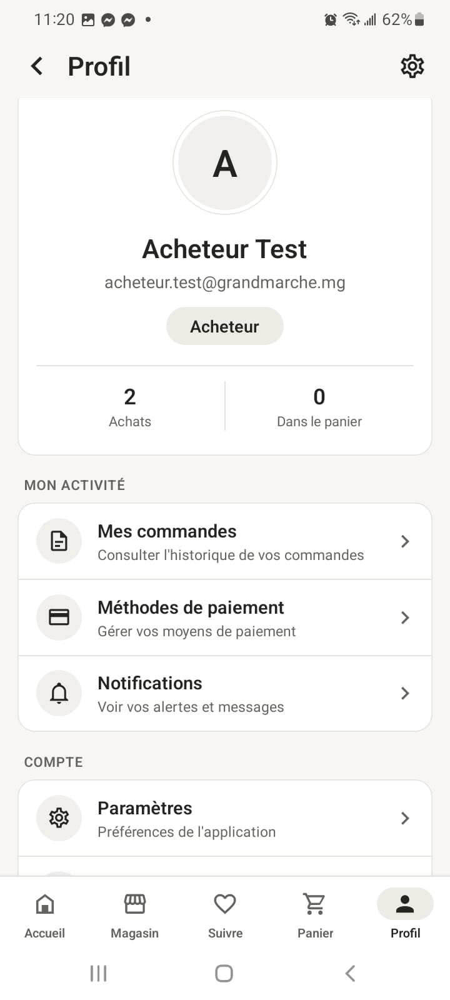
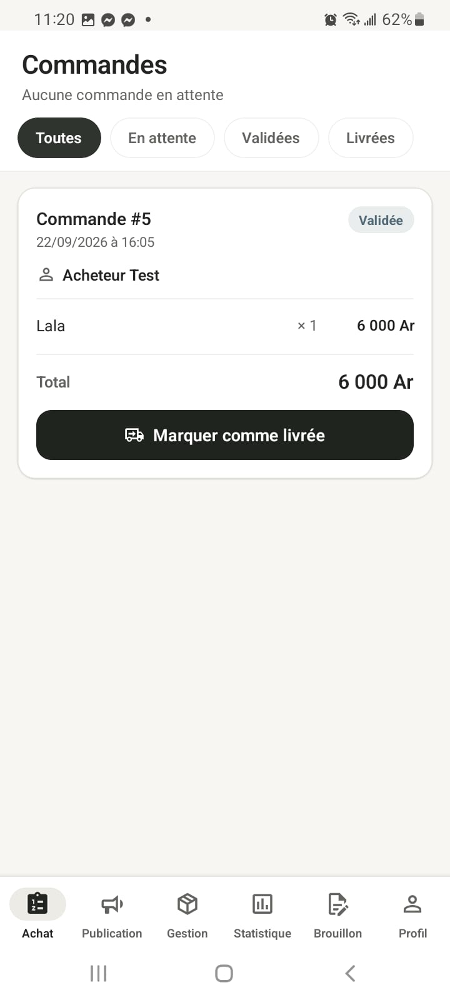
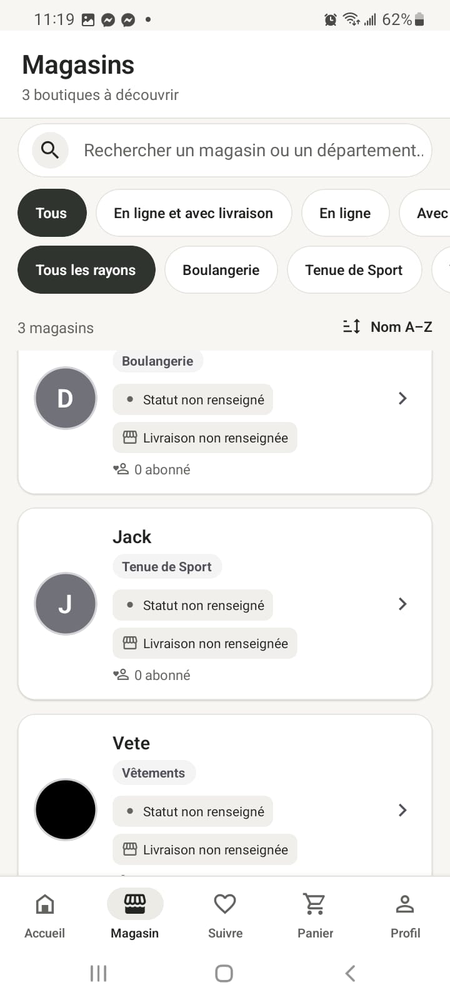
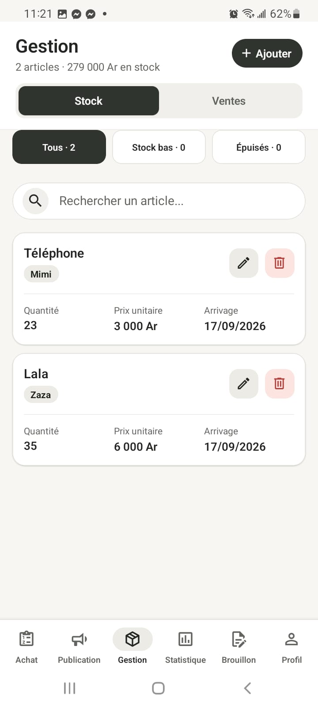
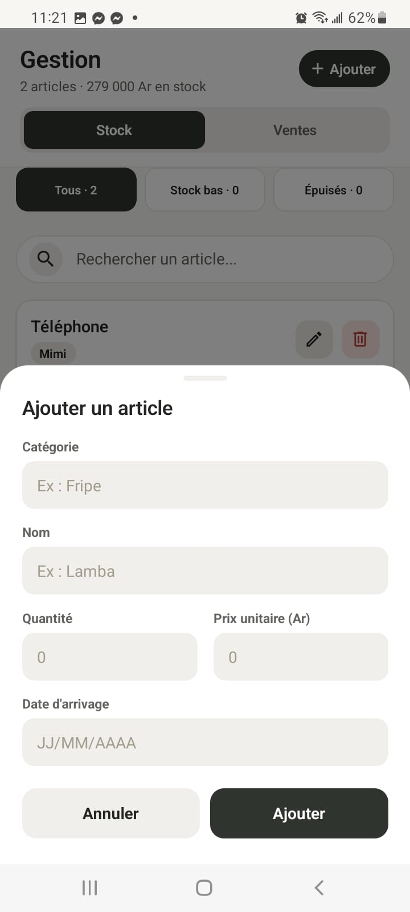
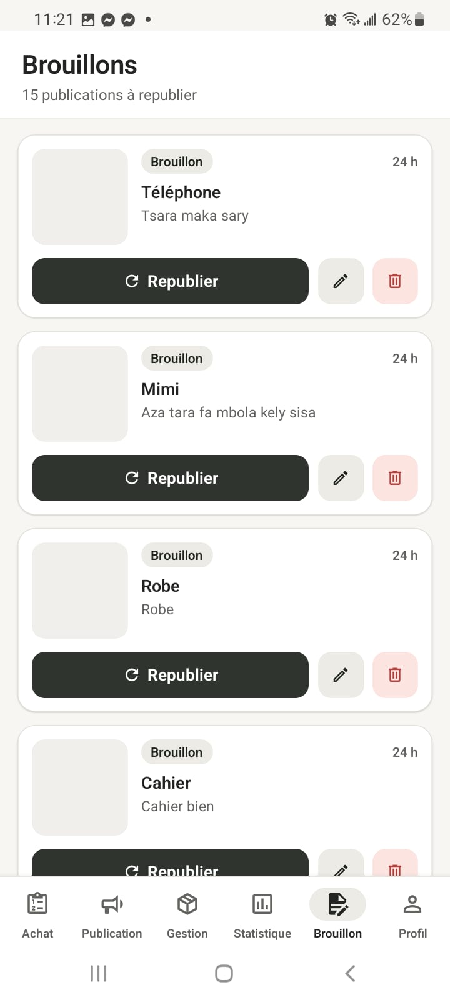
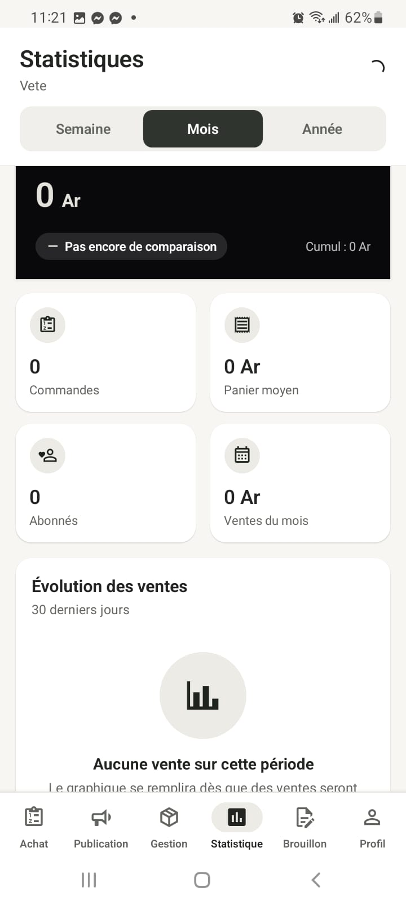

Écran 01
Connexion acheteur
Écran de connexion de l’espace acheteur avec e-mail, mot de passe et option de connexion Google.
Application marketplace mobile pensée pour connecter les vendeurs et les acheteurs de Toamasina, avec catalogue, magasins, commandes, panier, gestion de stock, brouillons et statistiques vendeur.
Application marketplace mobile pensée pour connecter les vendeurs et les acheteurs de Toamasina, avec catalogue, magasins, commandes, panier, gestion de stock, brouillons et statistiques vendeur.
Le projet couvre deux parcours : acheteur et vendeur, avec des interfaces dédiées à la découverte, l’achat, la gestion commerciale et le suivi des performances.
Chaque capture ci-dessous explique une page, une fonction ou un moment important du projet.
Écran de connexion de l’espace acheteur avec e-mail, mot de passe et option de connexion Google.

Affichage de plusieurs articles avec photos, prix, variantes et bouton d’ajout au panier.

Accueil de Grand Marché : recherche, raccourcis, départements et bannière de présentation de la marketplace locale.

Profil acheteur avec résumé des achats, paramètres, moyens de paiement et notifications.

Gestion des commandes avec filtres par statut, détail de la commande et action de confirmation de livraison.

Recherche et découverte des boutiques avec filtres par rayon, statut et disponibilité de livraison.

Espace vendeur pour suivre le stock, rechercher un article et modifier ou supprimer les produits enregistrés.

Formulaire d’ajout d’article avec catégorie, nom, quantité, prix unitaire et date d’arrivée.

Gestion des publications en brouillon avec actions de republication, modification et suppression.

Tableau de bord vendeur avec commandes, panier moyen, abonnés, ventes et suivi de l’évolution des ventes.